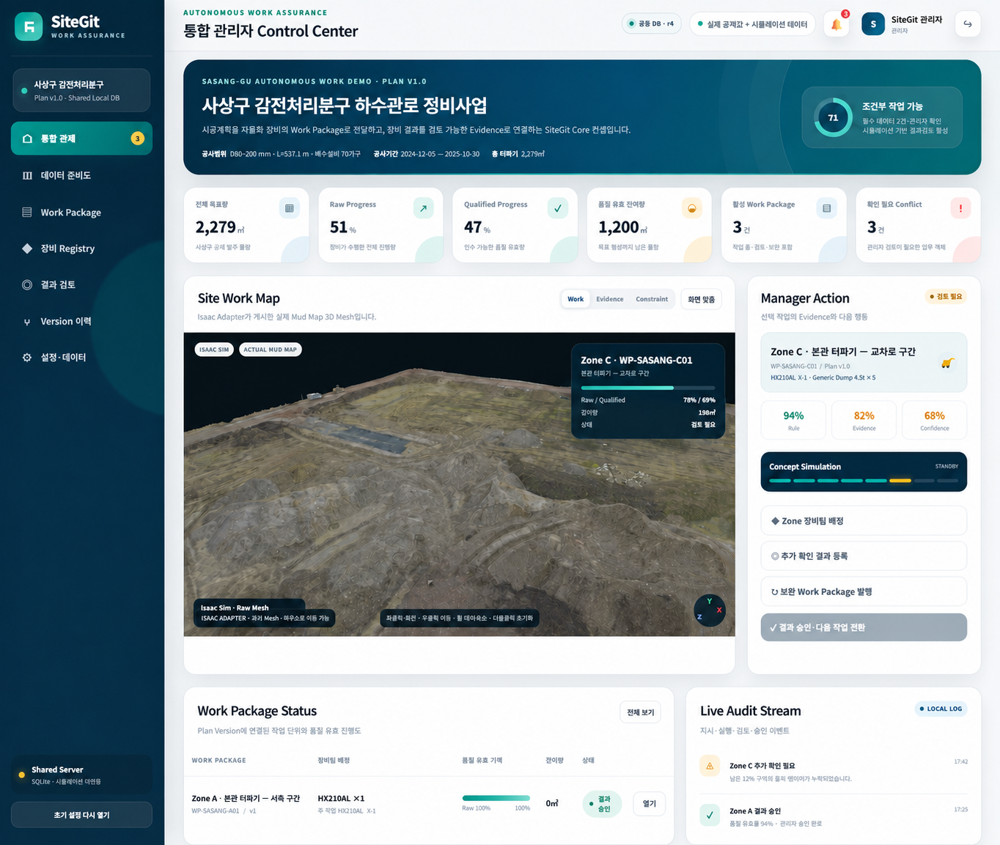
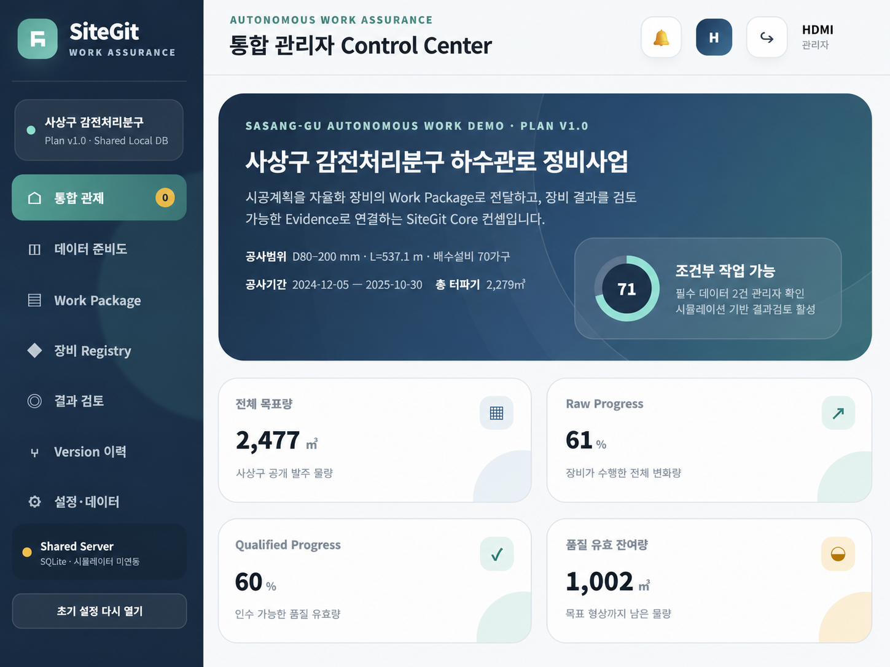
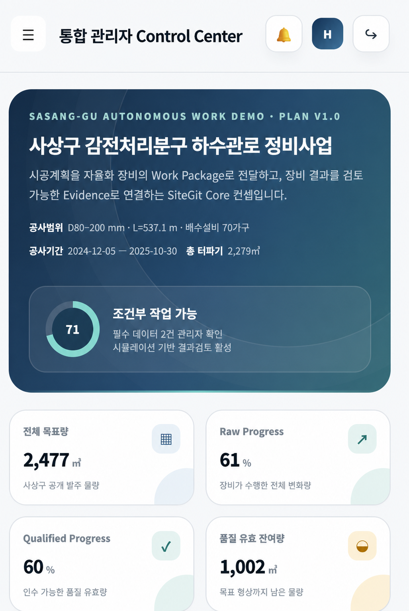
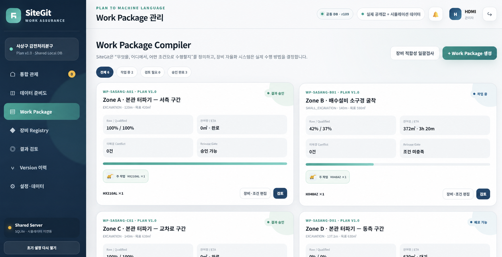
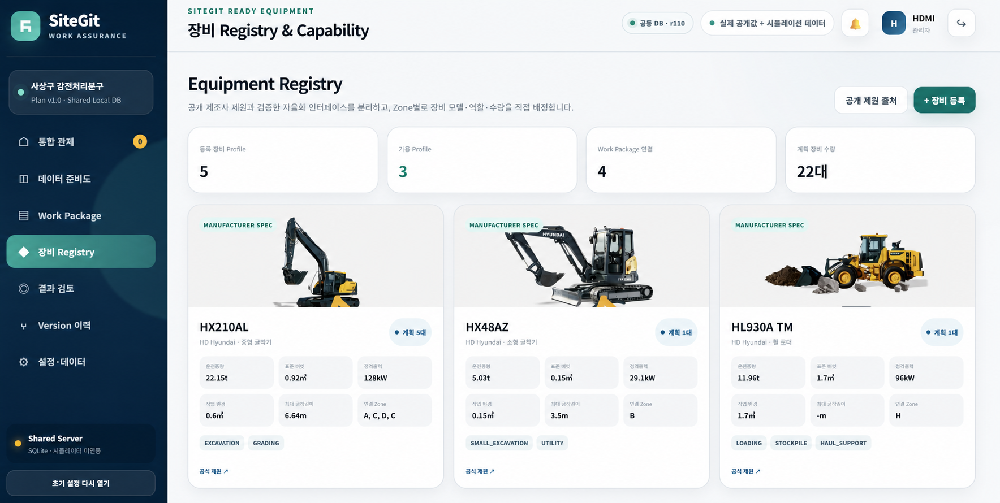
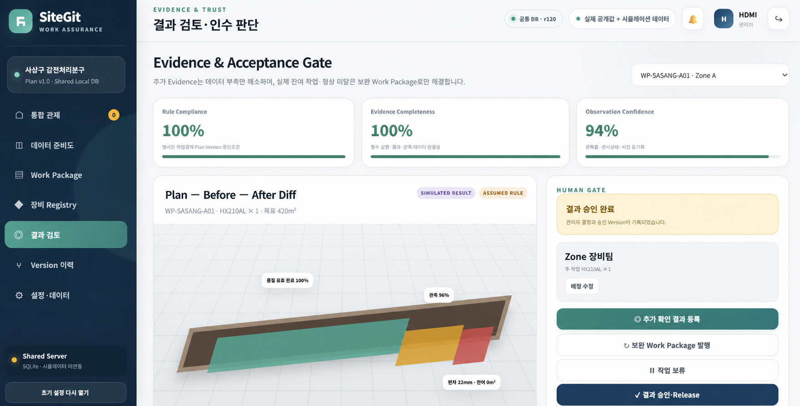
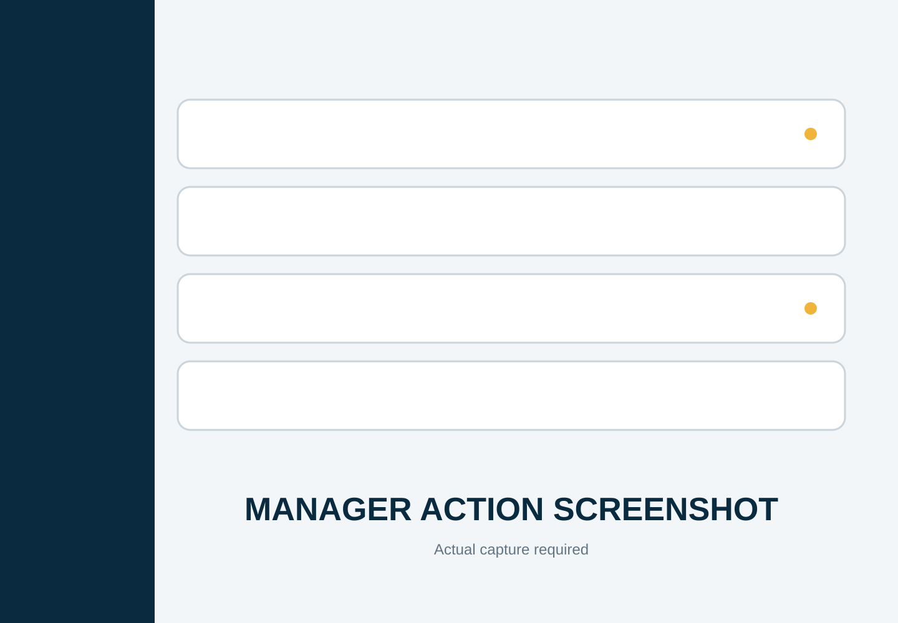
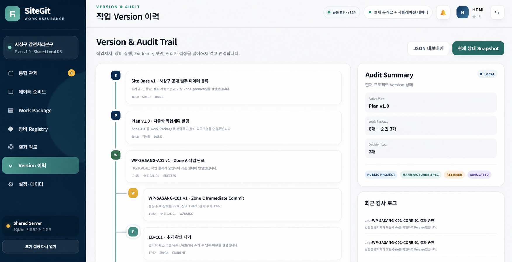

계획의 단절
도면과 공정표가 장비가 이해하는 작업 단위로 이어지지 않습니다.
AUTONOMOUS WORK ASSURANCE
HD 현대와 함께 현장과 장비를 잇는 인터페이스 HD Hyundai Monitoring Interface
도면과 물량표에서 시작한 계획을 실행 가능한 Work Package로 전환하고,
장비의 결과를 검증 가능한 Evidence와 Version으로 연결합니다.



THE DISCONNECTED SITE
SiteGit은 흩어진 세 흐름을 하나의 운영 맥락으로 연결합니다.
도면과 공정표가 장비가 이해하는 작업 단위로 이어지지 않습니다.
어떤 조건으로 무엇을 수행했는지 공통된 기준이 부족합니다.
결과 데이터와 관리자 판단이 한 이력으로 남지 않습니다.
계획부터 승인까지, 자율화 작업의 신뢰 가능한 연결 구조
01 · PLAN COMPILER
구역, 목표 물량, 허용오차, 장비 역할을 하나의 Work Package로 묶어 실행 조건을 명확히 전달합니다.

02 · EQUIPMENT REGISTRY
제조사 공개 제원과 프로젝트 요구조건을 분리해 관리하고, 작업에 맞는 장비 조합을 빠르게 확인합니다.

03 · LIVE EXECUTION
구역별 진행률, 장비 상태, 잔여 물량과 위험 신호를 지도 중심 대시보드에서 동시에 파악합니다.
04 · EVIDENCE GATE
계획 대비 결과, 관측 범위, 신뢰도와 추가 확인 기록을 하나의 Evidence Bundle로 구성합니다.

05 · MANAGER ACTION
물리적 미달과 Evidence 부족을 구분해 추가 확인, 보완 작업, 보류 또는 승인으로 연결합니다.

구현 중06 · VERSION & AUDIT
계획, 실행, Evidence, 보완, 관리자 결정을 시간 순서의 Version과 Audit Trail로 남깁니다.

PRODUCT PREVIEW
현재 구현된 화면을 기능별로 빠르게 비교해 보세요.
HOW SITEGIT WORKS
현장 좌표와 기준 데이터를 준비합니다.
계획을 실행 가능한 조건으로 묶습니다.
장비팀이 작업을 수행하고 상태를 반환합니다.
결과를 검증하고 관리자가 승인합니다.
SITEGIT PROTOTYPE
SiteGit은 건설사의 계획과 장비의 실행 사이에 신뢰 가능한 연결 구조를 제안합니다.
제품 화면 다시 보기 ↑